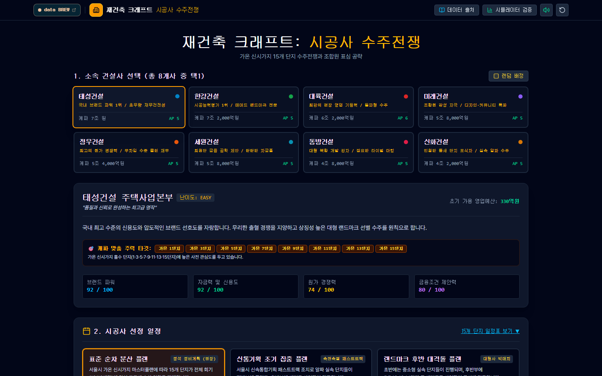
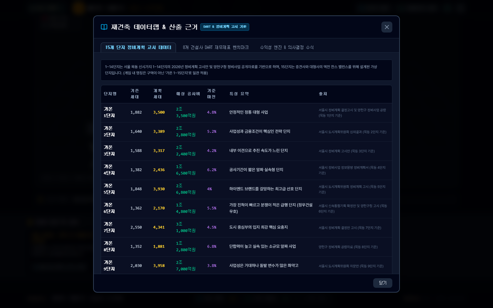

이런 게임입니다
재건축은 건설사에게 한 번에 수조 원이 걸린 사업입니다. 하지만 어느 단지를 어느 시기에 어떻게 공략할지는 정답이 없습니다. 예산은 한정돼 있고, 시공 능력(캐파)도 한계가 있으며, 경쟁사는 같은 단지를 노립니다.
재건축 크래프트는 이 수주전을 턴제 전략 게임으로 만들었습니다. 먼저 8개 가상 건설사 중 하나를 고르고, 15개 단지의 시공사 선정 일정(플랜)과 수주 목표, 진행 기간을 정합니다. 그다음 매 턴 행동력(AP)과 영업예산을 써서 단지별로 조합원 표심을 공략합니다. 단지마다 우세인지, 박빙인지, 경쟁사가 앞서는지가 지도 위에 색으로 나타납니다.
업계에는 첩보도 돕니다. 어느 단지에서 단독 입찰 이야기가 나오고, 어떤 건설사가 파격 조건을 내밀었는지를 확인하려면 행동력과 예산을 써야 합니다. 정보와 돈, 시간 중 무엇에 먼저 쓰느냐가 승패를 가릅니다.
건설사와 단지, 인물은 모두 가상 설정입니다. 실제 재건축 수주전이나 건설사의 전략을 설명하거나 예측하지 않습니다.
이렇게 진행됩니다
태성, 한강, 대륙, 미래, 정우, 세원, 동방, 신화 8개 가상 건설사 중 하나를 고르거나 랜덤으로 배정받습니다. 건설사마다 시공 캐파(4조 2,000억~7조 2,000억 원), 행동력(AP 5~6), 난이도, 영업예산, 브랜드 파워·자금력·원가 경쟁력·금융조건 제안력이 다르고 주력 타깃 단지도 정해져 있습니다.
표준 순차 분산 플랜(정석, 15개 단지가 전체 기간에 고르게 입찰), 신통기획 조기 집중 플랜(알짜 단지가 전반부에 몰림), 랜드마크 후반 대격돌 플랜(5·7·10·13·14단지 등 매머드급이 후반에 동시에 격돌) 중 하나를 고릅니다. 15개 단지 일정표를 펼쳐 볼 수 있습니다.
3.5조 원(안전), 5.6조 원(도전적), 7.7조 원(공격적), 10.5조 원(무모, 실패하면 해고 위험) 중 목표를 정하고, 표준 18개월(18턴) 또는 단축 12개월(12턴)로 진행합니다.
가온 신시가지 15개 단지를 3D 입체 도시 또는 2D 전술 지도로 봅니다. 당사 수주 완료, 경쟁사 수주 완료, 당사 우세, 박빙 경합, 경쟁사 우세, 수주전 준비 상태가 색으로 구분됩니다. 마우스로 카메라를 돌리고 확대하며 단지를 누르면 상세 정보가 나옵니다.
영업본부장으로서 사장과 CFO의 신뢰(예: 75%)를 관리하고, 수주 실적(최대 5곳까지), 영업예산, 시공 캐파 잔량, 예상 순이익을 확인합니다. 단지 주민과 조합원은 가온 소통방에서 만납니다. 경쟁 7개 건설사의 수주 현황과 상세 전력 분석도 볼 수 있습니다.
단독 입찰 후 수의계약 추진설, 경쟁사의 파격 이주비 패키지 같은 소문이 턴마다 돕니다. 첩보 실사 확인(1 AP, 4억 원)으로 진위를 가려 전략에 반영합니다.
화면 미리보기

시작 — 건설사와 일정, 목표 선택
수주 — 15개 단지 관제 지도

데이터랩 — 단지 정비계획 고시 데이터
규칙과 자료
건설사와 단지 이름, 인물은 모두 가상입니다. 다만 1~14단지의 규모와 공사비는 실제 정비계획 고시와 공개자료를 바탕으로 설계했고 15단지만 가상 단지라고 서비스가 밝힙니다. 세부 계산식은 서비스의 데이터 출처 화면에서 확인해 주세요.
알아 둘 것
이 게임은 재건축 수주전을 단순화한 시뮬레이션입니다. 실제 재건축 시공사 선정에는 조합 총회, 관련 법령, 홍보 규제, 입찰 조건 등 훨씬 많은 변수가 있고, 게임은 그 일부만 다룹니다.
건설사 이름, 단지 이름, 경영진, 조합원은 모두 가상입니다. 실제 건설사나 단지와 관련이 없으며 현실의 수주 결과를 예측하지 않습니다.
서비스 상단에는 데이터 출처와 시뮬레이터 검증 메뉴가 있습니다. 규칙의 근거를 확인하려면 그 화면을 참고하세요.
기술 및 제작 방식
개발 현황
누구나 바로 플레이할 수 있습니다. 표준 18개월(18턴)과 단축 12개월(12턴) 모드를 지원합니다.